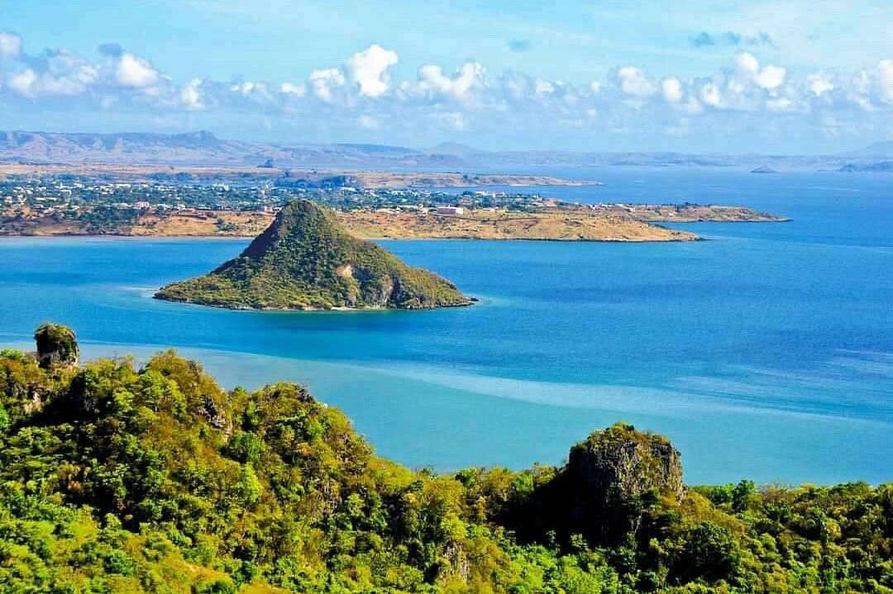
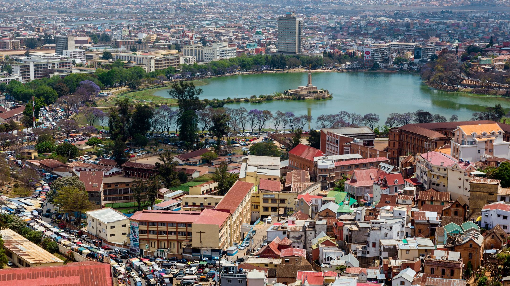

Nosy Be
Die Parfüminsel begrüßt Sie mit ihren weißen Sandstränden, kristallklarem Wasser und unvergesslichen Sonnenuntergängen.
Die Parfüminsel begrüßt Sie mit ihren weißen Sandstränden, kristallklarem Wasser und unvergesslichen Sonnenuntergängen.

Entdecken Sie die Bucht von Diego-Suarez, eine der schönsten der Welt, umgeben von wilden und historischen Landschaften.

Erkunden Sie die dynamische Hauptstadt, ihre königliche Geschichte, ihre malerischen Hügel und ihre bunten, lebendigen Märkte.


Erkunden Sie den tropischen Regenwald der Montagne d'Ambre. Wasserfälle, vulkanische Seen, Chamäleons, Lemuren und seltene Pflanzen machen diesen Nationalpark zu einem einzigartigen Naturerlebnis.
Ansehen
Genießen Sie traumhafte Strände, luxuriöse Hotels, Wassersport, Bootsfahrten und wunderschöne Sonnenuntergänge. Nosy Be ist das beliebteste Badeziel im Norden Madagaskars.
Ansehen
Erkunden Sie die Baobab-Allee bei Sonnenuntergang – eine ikonische und magische Landschaft, die man in Madagaskar nicht verpassen darf.
AnsehenL'art culinaire à Madagascar
 Tradition
Tradition
Entdecken Sie die echten Aromen Madagaskars Probieren Sie traditionelle madagassische Spezialitäten, zubereitet mit lokalen Produkten wie Reis, Fisch, Fleisch und Gewürzen – nach Rezepten, die von Generation zu Generation weitergegeben werden.
 Exclusif
Exclusif
Die perfekte Verbindung zwischen Madagaskar und der Welt Erleben Sie eine raffinierte Küche, die lokale Zutaten mit internationalen Einflüssen verbindet – ideal für Reisende, die Qualität und Komfort suchen.
 Romantique
Romantique
Schaffen Sie unvergessliche Momente zu zweit Private Abendessen, eine romantische Atmosphäre und außergewöhnliche Orte für Paare, die ein besonderes Erlebnis suchen.
Natur & Abenteuer
Meer & Strand
Kultur & Tradition
Entspannung & Wellness
Forschung & Wissenschaftliche Entdeckung
Mada Discovery ist eine Reiseagentur, die Reisen nach Madagaskar anbietet. Sie organisiert Rundreisen, Hotelreservierungen, Transfers, Fahrzeugvermietungen, geführte Touren und individuelle Aufenthalte. Das Team legt großen Wert auf erstklassigen Service, Sicherheit, Umweltschutz und das Entdecken des natur- und kulturhistorischen Erbes Madagaskars.
Ein unvergesslicher Aufenthalt! Das Team hat alles perfekt organisiert, wir haben wunderschöne Orte in kompletter Sicherheit entdeckt. Ein großes Dankeschön für diese tollen Erinnerungen an Madagaskar.
Eine echte Entdeckung! Leidenschaftliche und aufmerksame Reiseleiter. Alles lief reibungslos und entsprach genau unseren Erwartungen. Ein riesiges Lob für Ihre Professionalität und Ihren herzlichen Empfang.
Dank Mada Discovery war unsere Abenteuerreise einfach unglaublich! Die Route war perfekt und der Fahrer von vorbildlicher Professionalität. Absolut empfehlenswert!